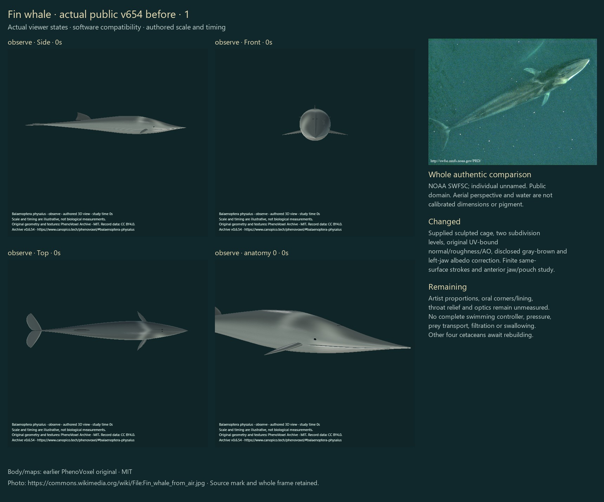
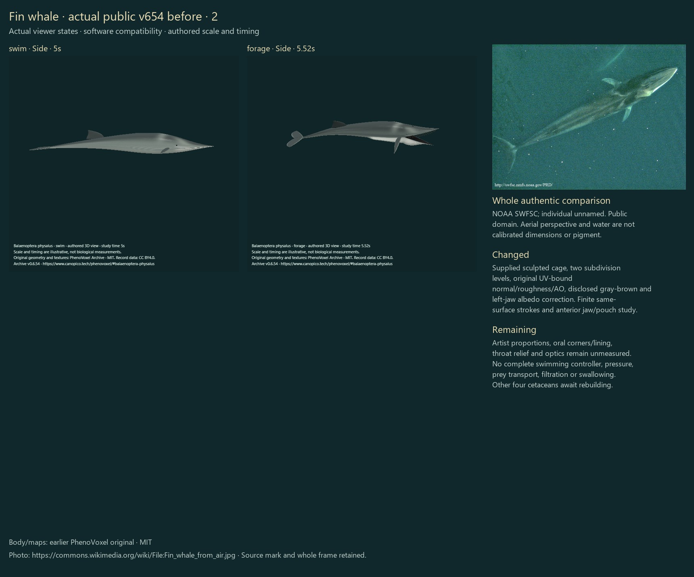
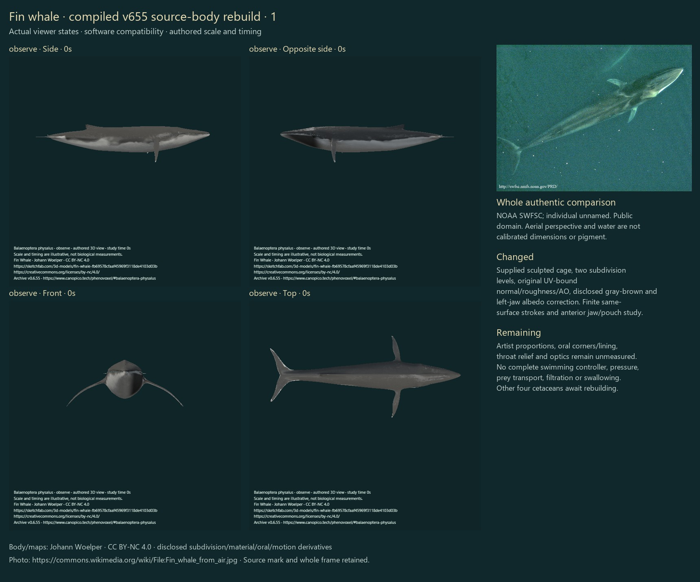
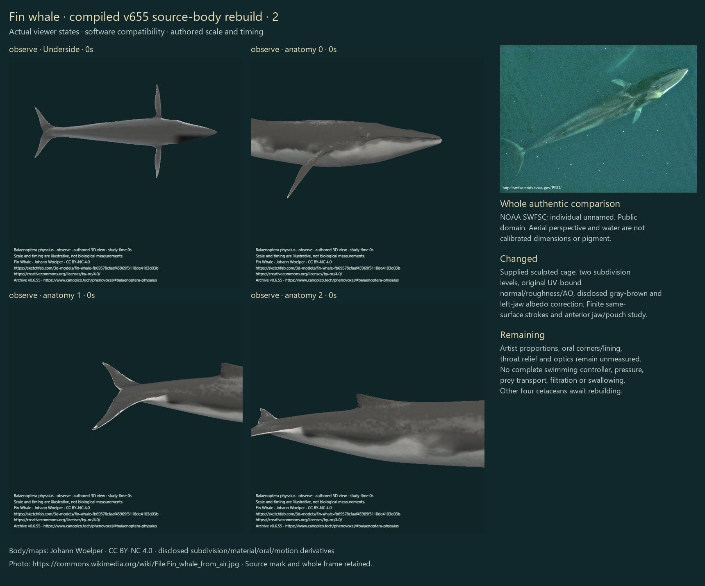
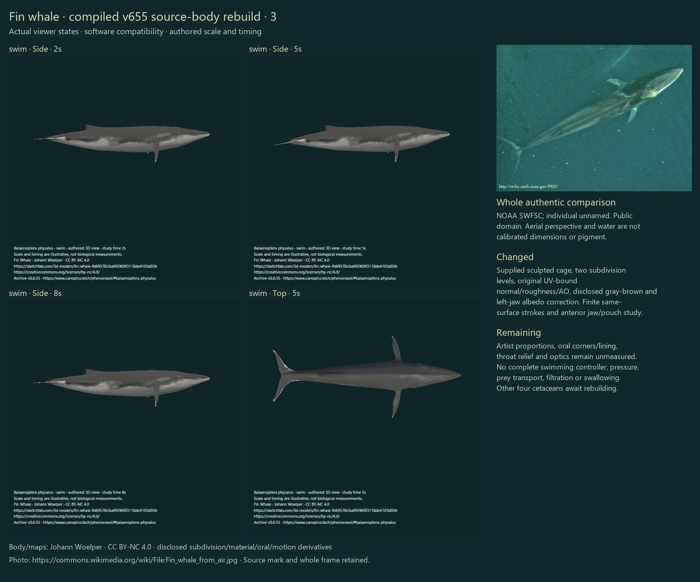
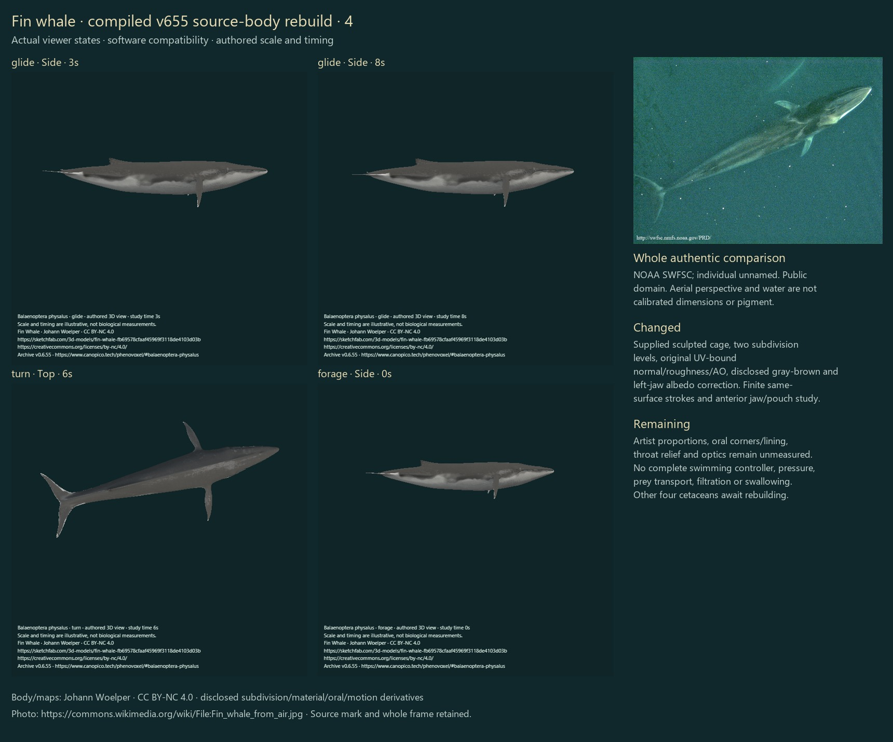
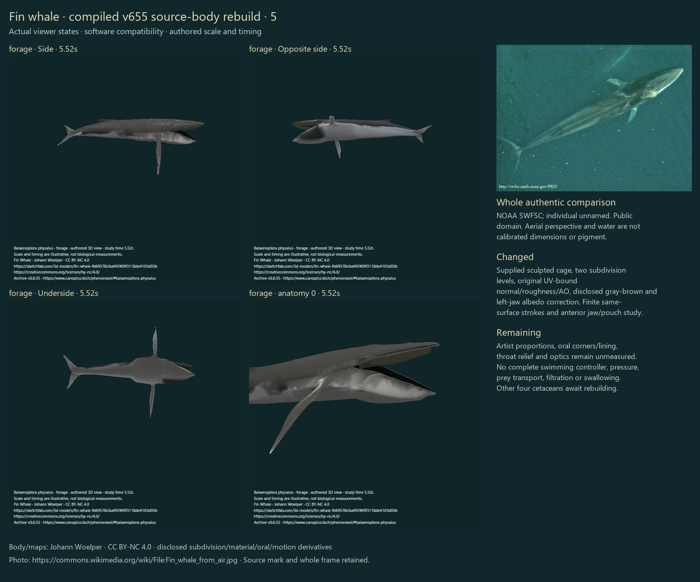
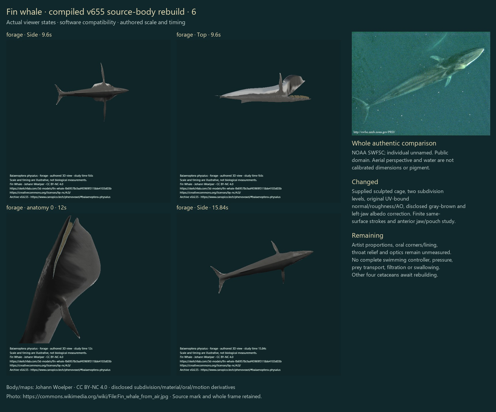
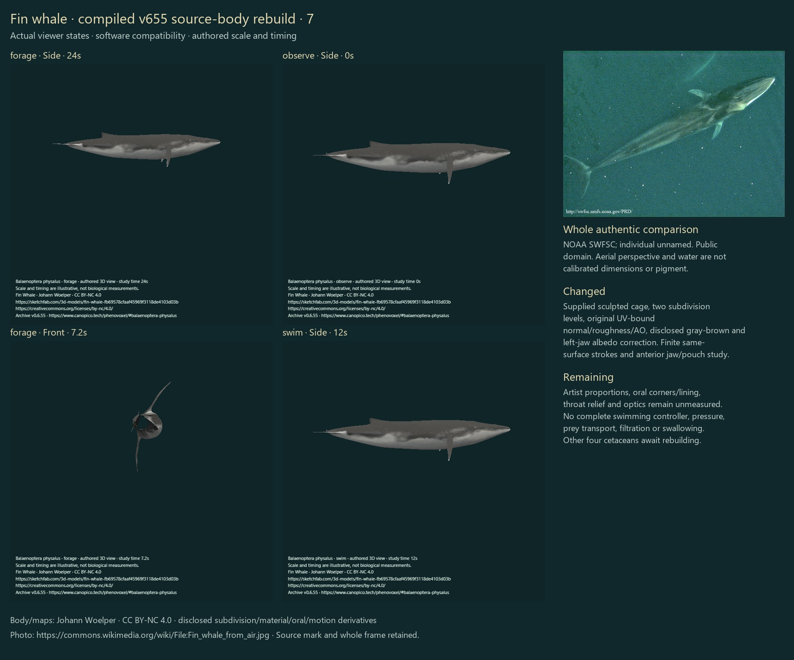

The earlier generated body did not meet the requested realism. This revision replaces that active exterior with the supplied Johann Woelper fin-whale control cage and its UV-bound detail maps. Two Catmull–Clark levels smooth the cage; the source eye, jaw contours, pectorals, dorsal fin and flukes remain recognizable parts of that body.
This is one existing fin-whale correction, not completion of the five-species rebuild. Gray whale, beluga, narwhal and common dolphin remain unfinished. Artist proportions, jaw hinges/corners, tissue unions, throat relief and optical response remain unmeasured. Photorealism, a fitted specimen and independent biological validation are not established.
The actual user-supplied ZIP contains an OBJ and six 2048×2048 PNG maps. Its public creator metadata, grant, control counts, naming and exterior were compared. Three active normal/roughness/AO PNG payloads remain byte-exact. The active colour map is a disclosed derivative: a selected gray-brown luminance/saturation adjustment and dark anatomical-left lower-jaw field. The original albedo and all other source files remain byte-exact in the downloadable source ZIP. These are artist maps, not acquired organism photographs, measured reflectance or a living-body scan.
Original supplied source ZIP · Derived GLB · Disclosed albedo derivative. Artist body, maps and their derivatives retain CC BY-NC 4.0; the software license does not replace that restriction.
NOAA’s fin-whale account supports the streamlined V-shaped head, aft hooked fin, dark dorsum/pale underside and opposite lower-jaw colours. Its ranges are 260–480 baleen plates per side and 50–100 throat pleats. 300 display plates per rack is one chosen reconstruction, not a count measured from this individual; the retained map’s throat relief is not a validated individual pleat count.
Goldbogen et al. 2006 provides the retained fin-whale foraging context reviewed in the preceding pass: tag-derived signals, seven animals and 28 dives. Figure 9 is time-series plots of four lateral lunges; inferred jaw opening is not direct jaw-video measurement. The archive’s gait frequency, 47-degree selected total jaw rotation, 87-degree selected lateral-roll context and 24-second feeding display are authored, not trajectories fitted from that paper. No new source video or paper figure is redistributed here.
The same mesh, UVs and maps persist through finite posterior dorsoventral strokes, a stroke–glide transition, a turn and jaw/pouch stages. The oral split and lining follow the supplied body’s actual selected cut edges. Distension is restricted to the anterior ventral region; closure precedes pouch recovery and the posterior trunk is not inflated. Source landmarks follow their actual mesh vertices. An opposite-side camera preset permits checking both jaw colours.
These are partial external studies. They do not calculate full swimming trajectories, thrust, water/prey transport, pressure, mandibular joint mechanics, filtration, tongue inversion, swallowing or physiology. Source normal/roughness images are not measured tissue constants. Software compatibility is the reviewed mode; final WebGL optics have not been reviewed.
The nine user-attached photographs were inspected privately for body, rostrum, appendages, throat outline and feeding posture. One carries Michael Valos / Blue Planet Archive copyright; no reusable grant was supplied for the others. They are not redistributed, projected onto the mesh, or claimed to be independently identified unique individuals. The two retained openly reusable whole references below have their existing precise creators/grants and download/delivery hashes.
Portable source converter (run after extracting the unchanged licensed source ZIP and installing the repository dependencies). The reproduced GLB geometry/image binary chunk and albedo matched the preceding conversion exactly; its embedded wording now explicitly identifies the derivative albedo. Download 28 actual model-view PNGs and their inspection ledger.
6 actual public v654 before views; 28 final compiled states. All accepted states were individually inspected. Rejected drafts and repeated checks are excluded from accepted counts.










Source-payload, finite-geometry, source-edge attachment, anterior-pouch and same-surface neutral-recovery checks are recorded separately from visual findings. The first new five-check run passed four: the expected roughness hash had a transcription omission; comparison with the actual supplied PNG repaired that literal. A later 30 focused checks passed. Those checks establish software/source properties, not biological accuracy. Final full regression, build, compiled review and actual publication evidence are saved separately.
Earlier drafts were rejected for near-black display colour, a feeding cut below the source mouth, approximate ellipse-based oral edges, clipped head framing, inadequate baleen display density, shared landmark rebinding and symmetrical source lower-jaw colour. The corrected selection still has visible unmeasured details. No initial clean-run claim or independent specialist review.
337 species; zero additions. All other 336 record objects, identity/taxonomy/photos/occurrence holds, approved blue/humpback surfaces and source payloads remain unchanged. Schedules remain off; no automatic next species.
| State | Finding and residual limit |
|---|---|
| observe / Side / 0s | Right-side whole body: tapered source head, deeper curved ventral outline and UV-bound mottling improve the earlier numerical wedge. Pale right jaw visible; dorsal tip and downward pectoral pose remain artist selections. |
| observe / Opposite side / 0s | Left-side whole body: dark selected lower-jaw field contrasts with the pale right jaw. Natural pigment boundary and eye detail remain approximate. |
| observe / Front / 0s | Front: retained mandibular volume and curved pectorals visible. Rostral ridge is angular, lower head opaque and source cross-section unmeasured. |
| observe / Top / 0s | Top: tapered rostrum, swept flukes and source pectoral roots remain distinct; source dorsal pattern is art, not calibrated skin. |
| observe / Underside / 0s | Underside: left/right mandibular asymmetry visible. Fine throat relief is weak in compatibility lighting; no measured pleat count. |
| observe / Side / 0s / focus 0 | Head focus: continuous jaw contour, lateral eye and existing map detail visible. Pale lower jaw and oral line improve prior wedge; mouth corner, rostral ridge and wet optics remain stylized. |
| observe / Side / 0s / focus 1 | Fluke focus: swept caudal planform and source tip texture retained. White edge, notches and proportions remain unmeasured. |
| observe / Side / 0s / focus 2 | Dorsal focus: attached aft fin visible with blunt/low artist tip; its falcate outline still differs from some supplied living photos. |
| swim / Side / 2s | Stroke2s: same connected source exterior and texture; modest posterior motion. No measured speed or propulsive forces. |
| swim / Side / 5s | Stroke5s: posterior curve and distal fluke orientation change without anterior inflation. Pectorals retain the source posture. |
| swim / Side / 8s | Stroke8s: recovery-side posterior flexion visible; source body/pigment persist and motion remains a selected local wave. |
| swim / Top / 5s | Stroke5s top: no invented lateral tail-beat. Fluke/pectoral planforms retained; no fluid-coupled path. |
| glide / Side / 3s | Glide3s: finite stroke contribution remains while source anterior stays stable; no velocity integration. |
| glide / Side / 8s | Glide8s: retained neutral source exterior after local articulation stops. This is not a measured glide distance or drag solution. |
| turn / Top / 6s | Turn6s top: whole-body selected orientation retains source outline and attached fins; no claim of a completed turning maneuver. |
| forage / Side / 0s | Forage0s: neutral selected feeding approach, source body intact. Different action framing does not imply a body-size change. |
| forage / Side / 5.52s | Forage5.52s side: actual source mouth opens and anterior pouch begins enlarging. Rear trunk is not inflated; lining/rim still simplified. |
| forage / Opposite side / 5.52s | Forage5.52s opposite: asymmetrical skin persists across jaw motion. Black oral corner and selected palate/lining transitions remain stylized. |
| forage / Underside / 5.52s | Forage5.52s underside: frontal pouch broadens while retained pectoral roots remain on body. Local fold shape is not fitted tissue strain. |
| forage / Side / 5.52s / focus 0 | Forage5.52s head: source-edge upper/lower lips and dense paired baleen visible; oral commissure and dark lining remain angular and unmeasured. |
| forage / Side / 9.6s | Forage9.6s side: lateral roll and distended anterior form visible during selected closing stage. Pose is contextual, not a tagged trajectory fit. |
| forage / Top / 9.6s | Forage9.6s top: expanded anterior lower shell/lining and baleen visible. Pouch margin and posterior oral union remain simplified. |
| forage / Side / 12s / focus 0 | Forage12s head: pouch remains enlarged while selected gape reduces. Throat relief, tissue unions and individual pigment are not measured. |
| forage / Side / 15.84s | Forage15.84s: mouth closed during retained selected roll/pitch and pouch recovery. No simulated filtration, swallowing or water flow. |
| forage / Side / 24s | Forage24s: same source exterior restored at finite endpoint; action camera fit differs from Observe without changing model scale. |
| observe / Side / 0s | Observe after feeding: original same-body posture/skin restored, no appendage replacement or lingering pouch inflation. |
| forage / Front / 7.2s | Forage7.2s front: nonblank rolled gape, lining and anterior pouch visible. Opaque mouth floor and corner anatomy remain incomplete. |
| swim / Side / 12s | Stroke12s: finite study ends in the same neutral source exterior. No perpetual generic swimming loop or completed biological motor controller. |
The first full local run passed 382 of 383 checks; the new artist source entry omitted its actual access date. The original provenance assertion was retained, the date was supplied from this access scope, and all 8 subsequent affected checks passed. That set also checks fixed-length centreline stations and exact stopped-glide recovery. A further final full result is recorded below only after the actual run completes.
Final full local regression: 384/384 software checks passed. This is software verification, not biological validation.